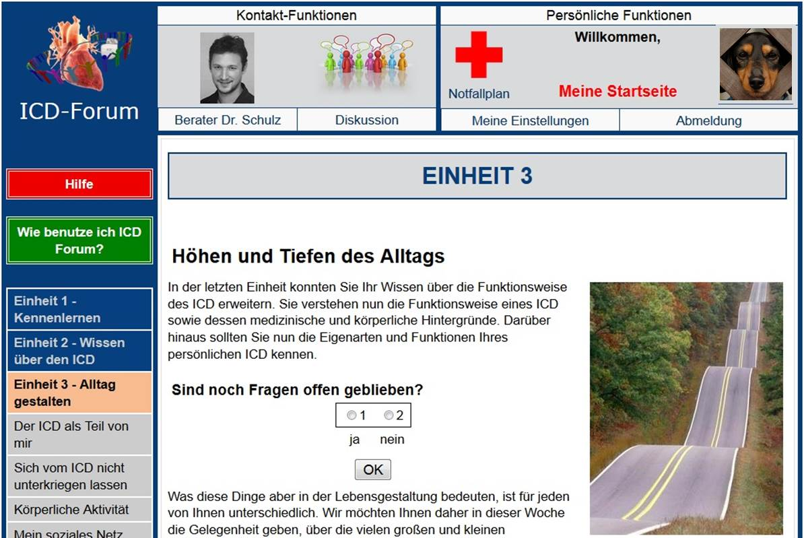

Was ist ICD-Forum?
Nach der ICD Implantation ist es normalerweise sehr schnell wieder möglich, den gewohnten Alltagsbeschäftigungen nachzugehen. Häufig bleiben jedoch Fragen offen oder kommen erst im Alltag auf. Bleiben diese ungeklärt, können unbegründete Befürchtungen aufkommen. Informationsveranstaltungen und ein Austausch mit anderen Patienten können hier helfen. Leider sind Selbsthilfegruppen und Kontakt zu kompetenten Experten für ICD-Patienten aber oft mit langen Anfahrtswegen verbunden.
Das Internet ermöglicht es uns, Ihnen ein vergleichbares Angebot nach Hause zu liefern.
Mit unserer Studie wollen wir herausfinden, ob sich so ein Internetangebot gut in Ihren Alltag integrieren lässt und ob es Ängste und Depressionen abbauen und die Lebensqualität steigern kann.
Dieses Internetangebot, ICD-Forum genannt, besteht aus einem 6-wöchigen Programm, bei dem in jeder Woche ein anderes Thema im Vordergrund steht. Sie erhalten dort Informationen, die durch konkrete, individuell zugeschnittene Anregungen ergänzt werden. Je nachdem, wie wichtig bestimmte Inhalte für Sie persönlich sind, können einzelne Themen dann gezielt vertieft werden. Ein weiterer Teil des Programms entspricht einem Diskussionsforum, über das Sie sich anonym mit anderen Patienten und Patientinnen austauschen können.
Das ICD-Forum wird von qualifizierten Diplompsychologen moderiert, die Sie im Verlauf des Programms persönlich beraten und Ihre Fragen beantworten werden.
Sie können selbst bestimmen, wie intensiv Sie das ICD-Forum nutzen. Das Angebot steht Ihnen rund um die Uhr an jedem Ort, an dem Sie auf das Internet zugreifen können, zur Verfügung.
Sie möchten teilnehmen?
ICD-Forum ist zurzeit ausschließlich für Studienteilnehmer zugänglich. Durch eine Teilnahme an der Studie haben Sie auf jeden Fall die Möglichkeit, kostenlos an dem Programm teilzunehmen. Außerdem leisten Sie einen wertvollen Beitrag für die Wissenschaft und helfen, die zukünftige Betreuung für ICD-Patienten und Patientinnen zu verbessern.